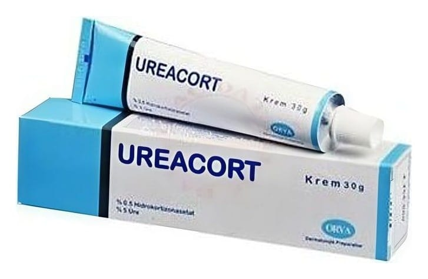

Ureacort Yağlı %0,5 + %10 Krem (30 g)

Ne için kullanılır
KT · Bölüm 1 UREACORT YAĞLI, deri üzerine sürülerek kullanılan bir kremdir. Zayıf etkili kortikosteroidlerle kombinasyonlar olarak adlandırılan bir ilaç grubuna dahildir. Etkin madde olarak 100 gramında 0,5 g Hidrokortizon asetat ve 10 g Üre içerir. UREACORT YAĞLI, ağzı plastik kapakla kapatılmış, 30 g beyaz renkli krem içeren alüminyum tüpte kullanıma sunulmaktadır. UREACORT YAĞLI; iltihap giderici, antialerjik ve kaşıntı giderici özelliklere sahiptir. UREACORT YAĞLI; su-sabun gibi temizlik malzemeleri, kozmetikler, takılar vb. iritanlar ile temas sonucunda oluşan iltihabi bir deri hastalığının (temas dermatiti) tedavisinde, Saçlı deride, burun ve dudak çevresi oluklarında, koltuk altı, meme altı kıvrımları veya kasıklarda kızarıklık, yağlı-sarı kepekli kabuklanma ve pullanma ile kendini gösteren iltihabi bir deri hastalığının (seboreik dermatit) tedavisinde, Meslek egzaması, anal egzama, atopik dermatit (bazı alerjenlere karşı doğuştan veya sonradan aşırı duyarlılık sonucu gelişen, sulanma gösteren kırmızımsı renkte doku hasarıyla belirgin uzun süreli egzama) vb. ciltte görülen egzamatöz hastalıkların tedavisinde, Sedef hastalığının tedavisinde, Böcek sokmaları, güneş yanıkları ve enfekte olmamış deri yanıkları gibi yerel tedaviye cevap veren alerjik ve iltihabi deri hastalıklarının tedavisinde kullanılır.